Fuel Tank Assembly (2GR-FE) Installation |
| 1. Install Fuel Emission Tube NO.1 |
 |
Align the axes of the pipe and connector, and insert until a "click" sound is heard.
| 2. Install Charcoal Canister Outlet Hose NO.1 |
 |
Connect the 2 clips and install the charcoal canister outlet hose No.1 to the fuel tank.
| 3. Install Fuel Tank to Filler Pipe Hose |
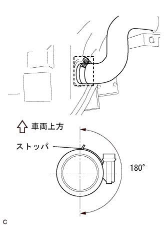 |
Install the fuel tank to filler pipe hose as shown in the illustration.
| 4. Install Fuel Tank Breather Hose |
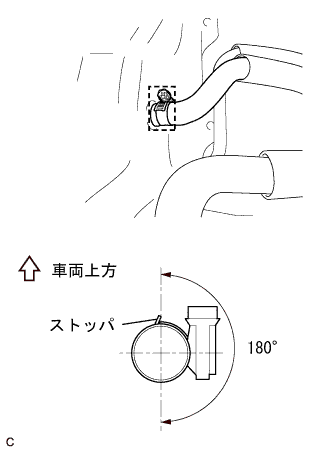 |
Install the fuel tank breather hose as shown in the illustration.
| 5. Install Fuel Tank Assembly |
Clean and degrease the bolt holes.
Set the fuel tank and 2 fuel tank bands on an engine lifter.
 |
While operating the engine lifter, slowly install the fuel tank to the vehicle.
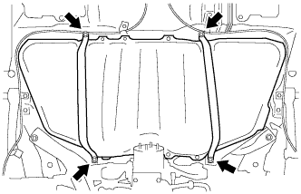 |
Secure the fuel tank with the 2 fuel tank bands and 4 bolts.
| 6. Connect Fuel Tank Main Tube |
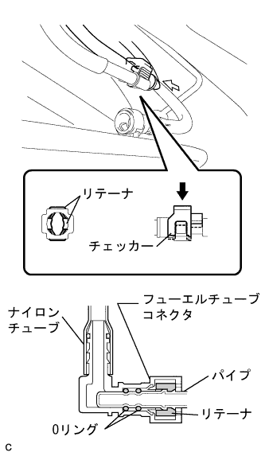 |
Align the axes of the pipe and connector, and insert until a "click" sound is heard.
| 7. Connect Fuel Hose |
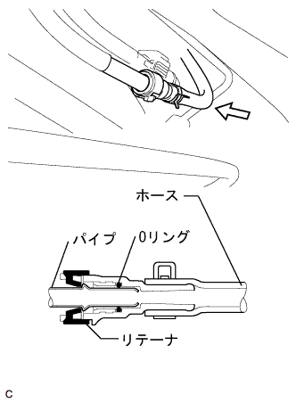 |
Align the axes of the pipe and connector, and insert until a "click" sound is heard.
| 8. Connect Fuel Tank to Filler Pipe Hose |
 |
Connect the fuel tank to filler pipe hose as shown in the illustration, and secure it with the clamp.
| 9. Connect Fuel Tank Breather Hose |
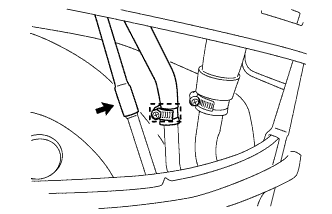 |
Connect the fuel tank breather hose as shown in the illustration, and secure it with the clamp.
Connect the charcoal canister outlet hose No.1.
| 10. Install Fuel Tank Protector NO.1 |
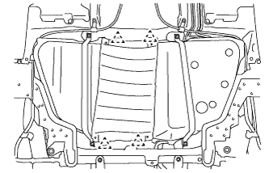 |
Install the fuel tank protector No.1 with the 4 clips.
| 11. Center Exhaust Pipe Sub-assembly NO.2 Installation |
 |
Compression Spring Inspection
Using a vernier caliper, measure the free length of the compression spring.
 |
Gasket Installation
Insert a new gasket into exhaust center pipe sub-assembly CTR NO.2 as far as it will go by hand.
Install exhaust center pipe sub-assembly CTR NO.2 with the 4 exhaust pipe supports.
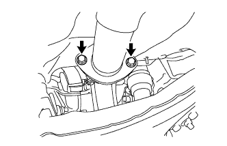 |
Install exhaust center pipe sub-assembly CTR NO.2 to the exhaust center pipe assembly with the 2 bolts and 2 compression springs.
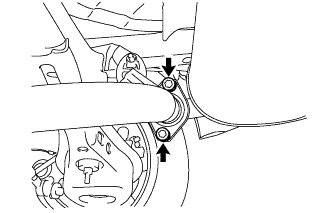 |
Install exhaust center pipe sub-assembly CTR NO.2 to the exhaust tail pipe assembly with the 2 bolts and 2 compression springs.
| 12. Install Front Floor Brace Center |
 |
Install the 4 bolts and the front floor brace center.
| 13. Install Fuel Sender Gauge Assembly |
 |
Install the fuel sender gauge assembly with the 5 screws.
| 14. Install Rear Floor Service Hole Cover NO.2 |
 |
Connect the connector.
Install the service hole cover using new butyl tape.
| 15. Install Fuel Suction Tube Assembly w/ Fuel Pump |
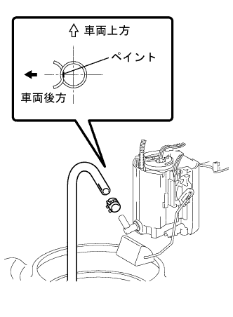 |
Connect the fuel tube and install the fuel suction tube assembly to the fuel tank.
 |
Install a new gasket to the fuel suction tube assembly.
| 16. Install Fuel Tank Vent Tube Set Plate |
 |
Align the marks on the fuel tank vent tube set plate and fuel suction tube assembly, and tighten the fuel tank vent tube set plate and fuel tank protector NO.3 together with the 8 screws.
| 17. Connect Fuel Emission Tube NO.1 |
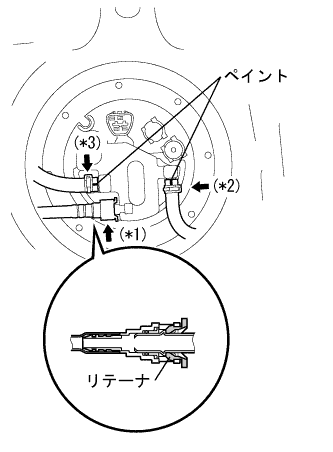 |
Align the axes of the pipe and connector, and insert until a "click" sound is heard. (*1)
After connecting, pull on the connector and pipe to check that they are securely connected.
| 18. Connect Fuel Hose |
Connect the fuel hose to the fuel suction tube assembly so that the hose paint mark (white) faces the top of the vehicle. (*2)
| 19. Connect Charcoal Canister Outlet Hose NO.1 |
Connect the charcoal canister outlet hose No.1 to the fuel suction tube assembly so that the hose paint mark (white) faces the top of the vehicle. (*3)
| 20. Connect Fuel Tank Main Tube |
 |
Insert the fuel tank main tube into the plug of the suction tube assembly.
Install the tube joint clip.
 |
Connect the fuel pump connector.
| 21. Add Fuel |
| 22. Connect Battery Negative Terminal |
| 23. Inspect for Exhaust Gas Leaks |
Check that there are no exhaust gas leaks from the locations shown in the illustration (exhaust pipe joints and each sensor installation area).

| 24. Inspect for Fuel Leaks |
Fuel Pump Operation Check
Connect SST (TaSCAN) to DLC3.
Operate according to the screen display, select 'Active Test' - 'Circuit Relay' - 'ON', and check the fuel pump operation.
Fuel Leak Inspection
Check that there are no fuel leaks in the fuel system while fuel pressure is applied.
| 25. Install Rear Floor Service Hole Cover |
 |
Using new butyl tape, install the rear floor service hole cover.
| 26. Install Rear Door Scuff Plate RH |
 |
Engage the 8 claws to install the rear door scuff plate RH.
| 27. Install Rear Door Scuff Plate LH |
| 28. Install Rear Seat Outer Belt Assembly Center (RH Seat Position) |
 |
Install the rear seat outer belt assembly center, rear seat inner belt assembly and washer with the bolt.
| 29. Install Rear Seat Assembly RH (Seat Position RH Side) |
 |
Set the rear seat assembly RH in the vehicle, and install the 2 rear side bolts in the order inner → outer.
 |
Raise the seatback, and install the 2 front side bolts of the rear seat assembly RH in the order inner → outer.
| 30. Install Rear Seat Cushion Hinge Cover NO.2 (RH Seat Position) |
 |
Engage the 4 claws and install the rear seat cushion hinge cover NO.2.
| 31. Install Rear Seat Cushion Hinge Cover NO.1 (RH Seat Position) |
 |
Engage the 4 claws and install the rear seat cushion hinge cover NO.1.
| 32. Remove Rear Seat Headrest Assembly Center (RH Seat Position) |
| 33. Install Rear Seat Headrest Assembly (RH Seat Position) |
| 34. Install Rear Seat Assembly LH (Seat Position LH Side) |
 |
Set the rear seat assembly LH in the vehicle, and install the 2 rear side bolts in the order inner → outer.
 |
Raise the seatback, and install the 2 front side bolts of the rear seat assembly LH in the order inner → outer.
| 35. Install Rear Seat Cushion Hinge Cover NO.2 (LH Seat Position) |
 |
Engage the 4 claws to install the rear seat cushion hinge cover NO.2.
| 36. Install Rear Seat Cushion Hinge Cover NO.1 (LH Seat Position) |
 |
Engage the 4 claws and install the rear seat cushion hinge cover NO.1.
| 37. Install Rear Seat Headrest Assembly (LH Seat Position) |
| 38. Setting Procedure When Disconnecting/Reconnecting Battery Terminal |
)